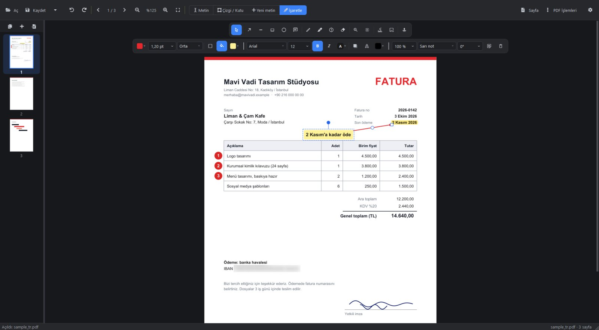
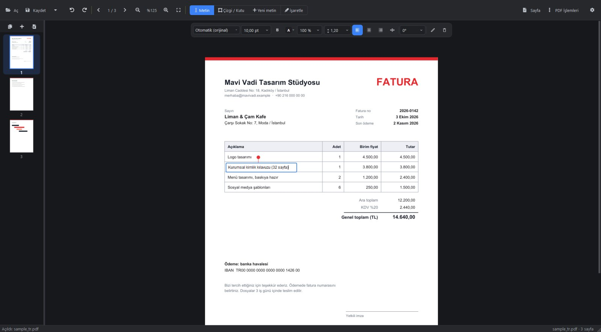
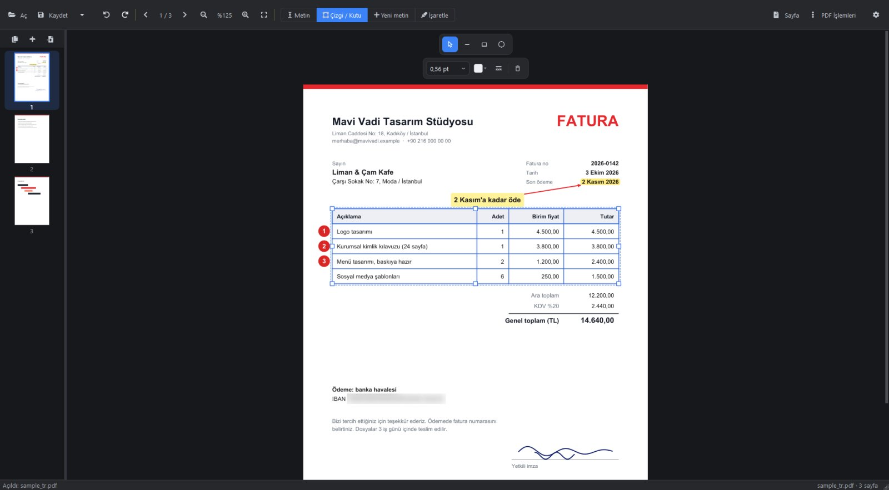
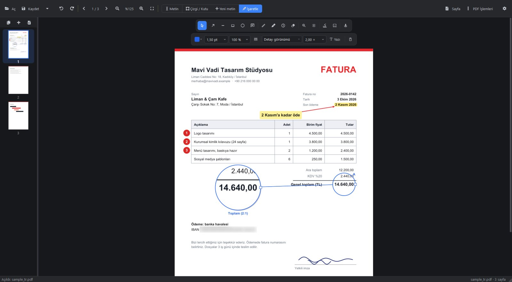

PDF'teki yazının kendisini
düzenleyin
Çoğu PDF aracı yazının üstüne beyaz bir kutu koyup yenisini yazar. Revora ise yazının kendisini, orijinal yazı tipi, boyutu ve rengiyle değiştirir.
Windows 10 ve 11 · 7 gün ücretsiz deneme · tek seferlik satın alma, abonelik yok

Orijinal yazı tipi
Revora, PDF'in kullandığı yazı tipini Windows'ta kurulu yazı tipleri arasında bulur ve değişikliğinizi onunla yazar. Türkçe karakterler bozulmaz.
Çevrimdışı ve gizli
Hesap yok, bulut yok, yükleme yok. Belgeleriniz bilgisayarınızdan çıkmaz.
Bir kez alın
7 gün ücretsiz deneyin, sonra bir kez ödeyin ve hep sizin olsun. Abonelik yok.
Günlük PDF işleriniz için her şey
Düzenleyin, işaretleyin, imzalayın ve sayfaları yönetin; tek ve hızlı bir masaüstü uygulamasında.
Yazıyı yerinde düzenleyin
Bir satıra tıklayıp yazın. Yazıyı çevresine dokunmadan taşıyın, döndürün, silin. Satır aralığı ayarlanabilen çok satırlı metin ve sayfada istediğiniz yere yeni yazı.

Tablolar ve çizgiler gerçek nesne
Tablo çizgilerini seçip taşıyın, boyutlandırın, bükün ya da biçimini değiştirin. Bütün bir ızgarayı kutu içine alıp tek seferde taşıyın; yeni çizgiler köşelere yapışır.

Kaydettikten sonra da düzenlenebilen işaretleme
Oklar, notlar, kelimelere oturan vurgular, numaralı rozetler, ayrıntı için büyüteç, imza ve kaşe. Hepsi kaydettikten sonra da yeniden değiştirilebilir.

Ayrıca
Her hafta ihtiyaç duyduğunuz araçlar.
- Alttaki yazıyı gerçekten silen bulanıklaştırma (karartma)
- İmza: bir kez çizin ya da imzanızın fotoğrafını yükleyin
- Sayfaları sıralama, döndürme, ekleme, çoğaltma, silme
- PDF birleştirme ve ayırma
- Filigran ve form doldurma
- Resimlerden PDF, PDF sayfalarından PNG/JPG
- Gömülü fotoğrafları tam çözünürlükte çıkarma
- Taranmış sayfalar için OCR (ücretsiz Tesseract ile)
- Geri al / yinele ve %800'e kadar yakınlaştırma
- Türkçe ve İngilizce arayüz